Physical objects
- Thermostats
- HVAC (Heating, Ventilation, and Air Conditioning)

- Monitoring and controlling systems = smart homes
- Improve quality of life
- From traditional to smart, they can hear thing and perfom jobs, they communicate together
Internet of Things: A Survey on Enabling Technologies, Protocols, and Applications
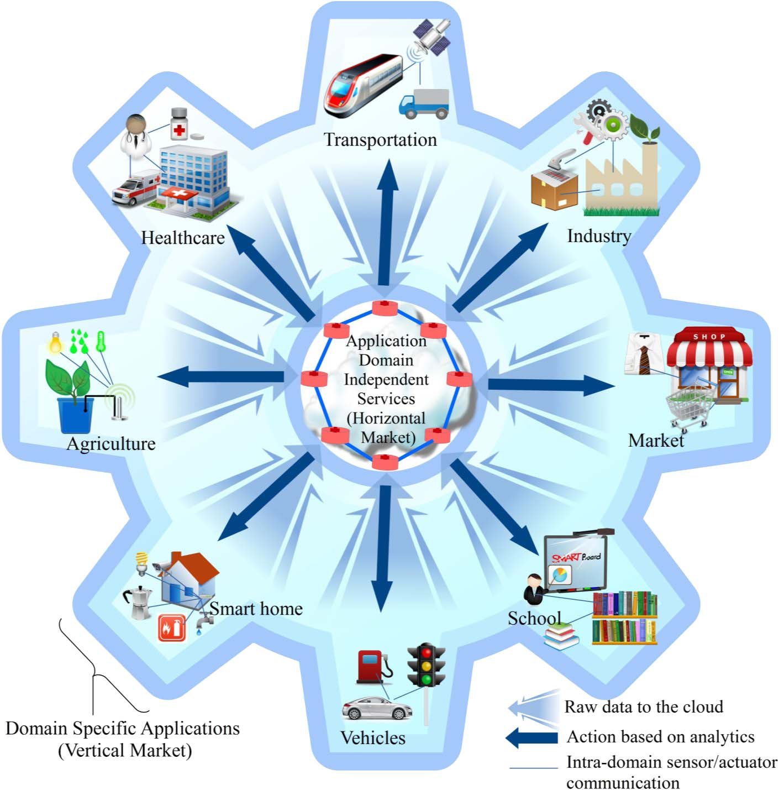
Picture, domain specific applications are interacting with domain independent services
Many scenarios can be invented
Many figures and numbers are given in the paper. The return on investment will climb up to 149% compared to only 13% in 2012. Every domain will benefit from IoT
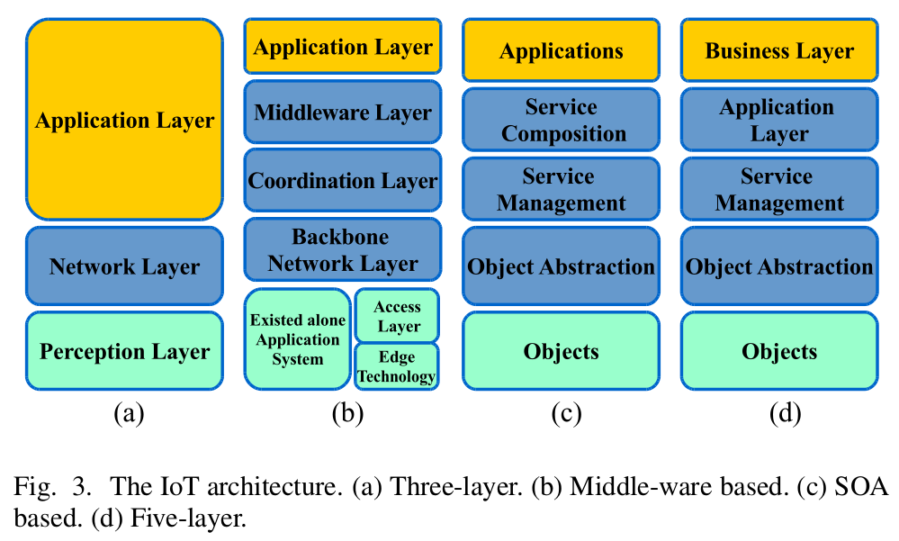
Five layers
Objects represent the physical sensors which collect and process information. Data is securely sent to the object abstraction layer which in turn forwards it to the next level using 3G, wifi, bluetooth. The service management layer pairs a service with its requester. It is the API level. Then application layer is the actual applicatio which provides measurements collected using the IoT devices. It is the one by which the users can interact with the devices. Finally, the business layer managers the overall IoT system.
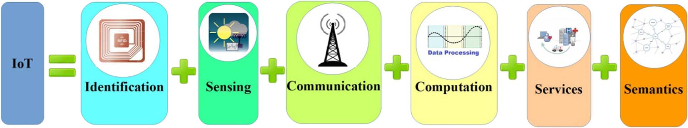
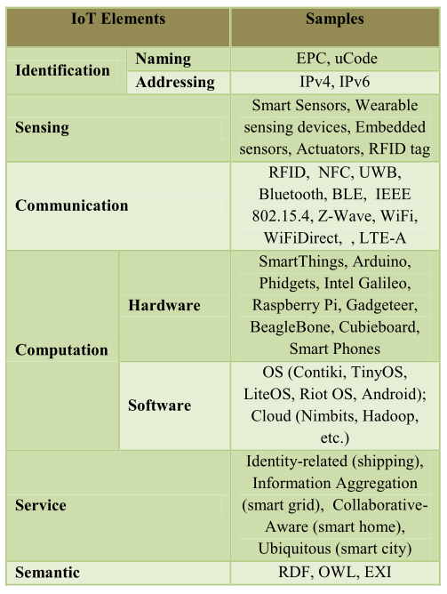
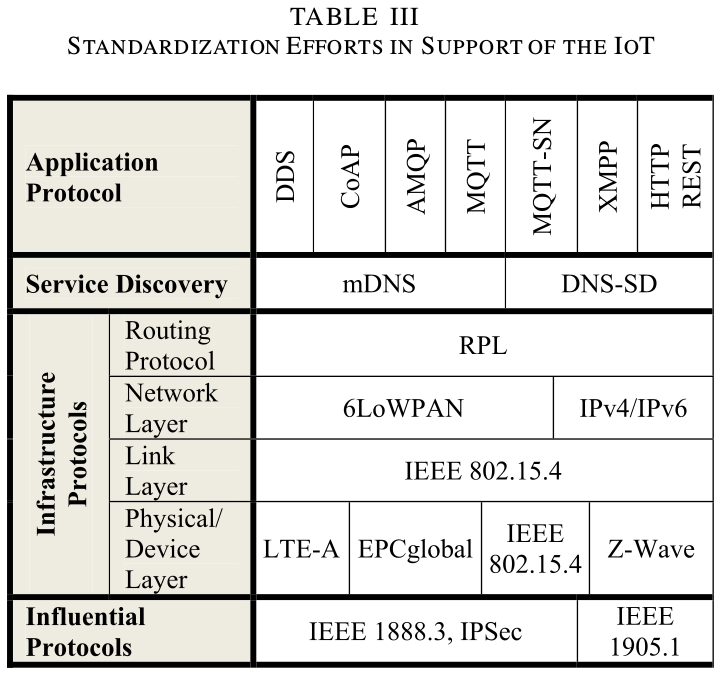
CoAP is like HTTP and Rest but it is bound to UDP. It fits really well low power devices. There is a mechanisme to provide reliable communication over UDP. As in HTTP, CoAP uses the methods GET PUT POST and DELETE. - .next slide. Let's now talk about MQTT
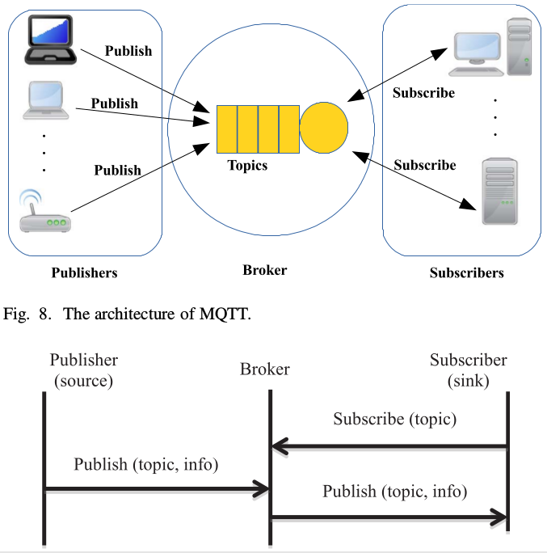
An interested device would register as a subscriber for specific topics in order for it to be informed by the broker when publishers publish topics of interest. The publisher acts as a generator of interesting data. After that, the publisher transmits the information to the interested entities (subscribers) through the broker. Security is ensured by checking authorization of all the entities. MQTT is already being used in many fields such as health care, or energy meter. Even Facebook uses it for its notification system.
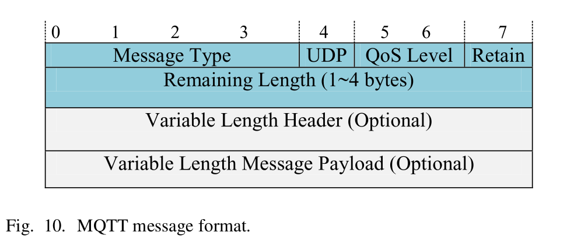
As you may have understood, MQTT is well fitted for small, cheap, low power and low memory devices in vulnerable and low bandwidth networks.
Here is the message format. The first two bytes of message are fixed header. In this format, the value of the Message Type field indicates a variety of messages including CONNECT (1), CONNACK (2), PUBLISH (3), SUBSCRIBE (8) and so on. The DUP flag indicates that the massage is duplicated and that the receiver may have received it before. Three levels of QoS for delivery assurance of Publish messages are identified by the QoS Level field. The Retain field informs the server to retain the last received Publish message and submit it to new subscribers as a first message.
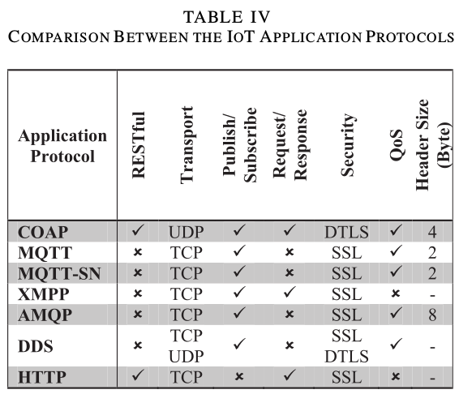
There are many ways to compare these protocols. How bad is the packet loss rate, importance of low delays, size of messages. It actually depends on what devices and what kind of network are used. There is not a unique best solution. Energy consumption can also be taken into consideration.
Let's now talk about service discovery protocols
mDNS inquires names by sending an IP multicast message to all the nodes in the local domain. By this query, the client asks devices that have the given name to reply back. When the target machine receives its name, it multicasts a response message which contains its IP address. All devices in the network that obtain the response message update their local cache using the given name and IP address.
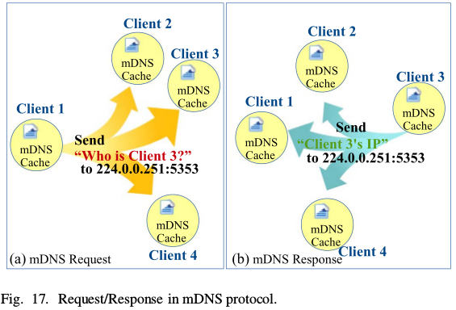
Let's now talk about Infrastructure protocols
lire slides+ 4 types of control messages are used to maintain the topology basically nodes try to find a preferred parent wont explain further
bluetooth, z-wave (home), wifi (home), lte (long distance), rfid (nfc)
Let's now talk about Infrastructure protocols
Codo adds encryption
Availability must be both software and hardware. Availability of software refers to the ability of the IoT applications to provide services for everyone at different places simultaneously. Hardware availability refers to the existence of devices all the time that are compatible with the IoT functionalities and protocols. Some easy solutions could be redundancy.
Reliability refers to the proper working of the system based on its specification. It is tigthly linked with Availability.
Mobility is more and more prominent. As we saw during previous lectures, there are still many issues to address, specifically with TCP.
Managing billions of smart devices is also another challenge, perhaps the most obvious. It is coupled with scalability, the network should be able to scale up as the number of connected devices increases. Same goes for the number of services. More importantly, all these devices and services must be interoperable. not matter what OS or hardware is used.
BIG data
Connecting a large number of physical objects like humans, animals, plants, smart phones, PCs, etc. equipped with sensors to the Internet generates what is called “big data.”
Challenges: how to retrieve, store and process such amounts of data
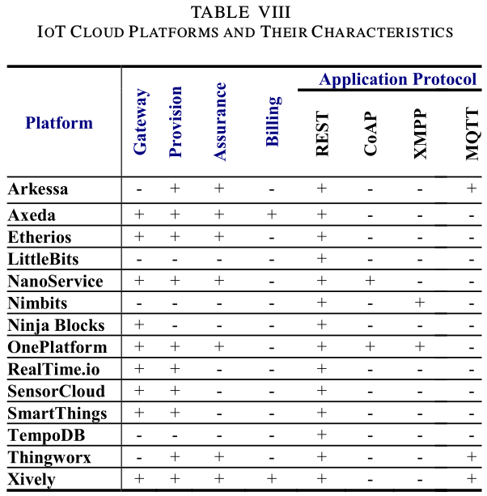
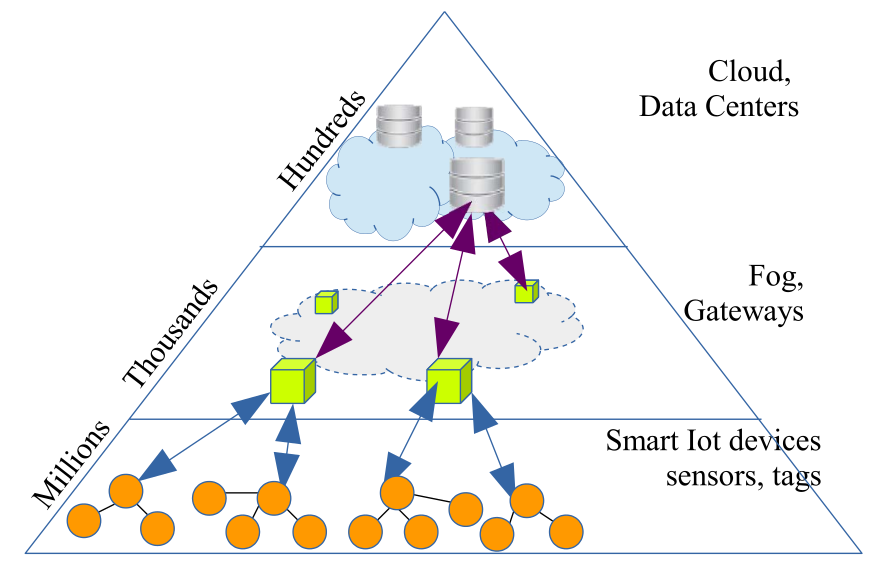
IoT devices can be classified into two major categories; namely: resource-constrained and resource-rich devices. We de- fine resource-rich devices as those that have the hardware and software capability to support the TCP/IP protocol suite. On de- vices that support the TCP/IP protocol suite, IoT applications are implemented on top of a variety of application level protocols and frameworks including REST, CoAP, MQTT, MQTT-SN, AMQP and others. On the other hand, devices that do not have the required resources to support TCP/IP cannot interoperate easily with resource-rich devices that support the TCP/IP suite. For ex- ample, microcontroller based appliances and gadgets should have the capability to interoperate with other IoT elements that are TCP/IP enabled
we are interested in collecting the patients’ vital sign measurements and delivering it to multiple nursing stations. We are also interested in deploying a light sensor and a door sensor to monitor the activity level of the patients and po- tentially identify the ones suffering from depression assuming that the patients have private rooms. To implement this functionality quickly, an application de- veloper can choose the relevant SmartThings or BITalino sensors that utilize ZigBee or Z-wave for communication to col- lect the senor measurements on the SmartThings platforms and utilize their APIs to build an application the pulls the collected data to the nursing stations. While the SmartThings approach described above can be quickly implemented, a custom approach that utilizes Phidgets USB sensors in conjunction with a microcontroller or processor based Single Board Computer (SBC) can provide a better op- tion to integrate hardware and software components from dif- ferent providers. These sensor nodes can utilize WiFi or IEEE 802.15.4 to communicate their measurements. In this scenario, an application developer might first download and install an open source MQTT broker like Mosquitto. Then, an open source im- plementation of the MQTT protocol like Eclipse Paho might be used to implement a client that runs on the SBC associated with the Phidgets USB sensors collecting the vital signs, light, and door sensor data. The MQTT clients publish the sensor data to the MQTT broker. In turn, the MQTT servers connected to the nursing stations subscribe to the MQTT broker to fetch mes- sages of interest. If inter-sensor collaboration is needed, a rout- ing protocol like RPL can be utilized between the sensors to enable the multi-hop delivery of data between sensors. In order to allow doctors to access the collected data remotely, a mobile application can be developed to connect to the MQTT broker to subscribe to messages that have the topics of interest. The broker can be publically exposed on the Internet behind a firewall through an LTE-A connection using Cisco’s 819 M2M Gateway.
5 From the Internet of Things to the Web of Things: Resource Oriented Architecture and Best Practices
They want to make the IoT part of the Internet by leveraging technologies such as HTML, Js, Ajax, PHP or ruby. This is what they call the Web of things, which is based on restful principles
uses URIs for identifying resources on the Web. It abstracts services in a uniform interfaces
ideal candidate to build a “universal” architecture and Application Programming Interface (API) for smart things
JSON or XML is machine readable
For example, things can be indexed like Web pages via their representations, users can “google” for them, and their URI can be emailed to friends or it can be bookmarked. The physical objects themselves can become ac- tive and publish blogs or inform each other using services, such as Twitter. 2 The general idea is that the Web is being used as a decentralized information system for easily exposing new services and applications, made possible, directly or indirectly, by smart things.
http://.../sunspots/1/sensors/lightResources are primarily structured hierarchically. So by accessing slash sensors, we would get the list of all the available sensors
operations or verbs add semantics
JSON is lightweight, compared to XML PAGE 7!!!!
In some cases, it makes sense to hide the platform-dependent protocol to access the resources of a particular device, and to expose them as RESTful service provided by a gateway
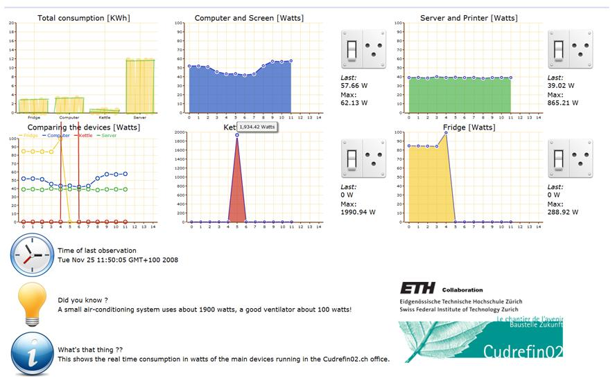
In this first example, we create a mashup to help households to understand their energy consumption and to be able to remotely monitor and control it.
The idea of the “Energie Visible” 11 project is to offer a Web dashboard that enables people to visualize and control the energy consumption of their household appliances
the dashboard can be im- plemented using any Web scripting language or tool (PHP, Ruby, Python, Java- Script, etc.).
For real time, we should use other protocols RTP or RTSP, or XMPP (messaging protocol)
describing: rdf or micro formats
sharing: social media
many libraries, available to non-programmers
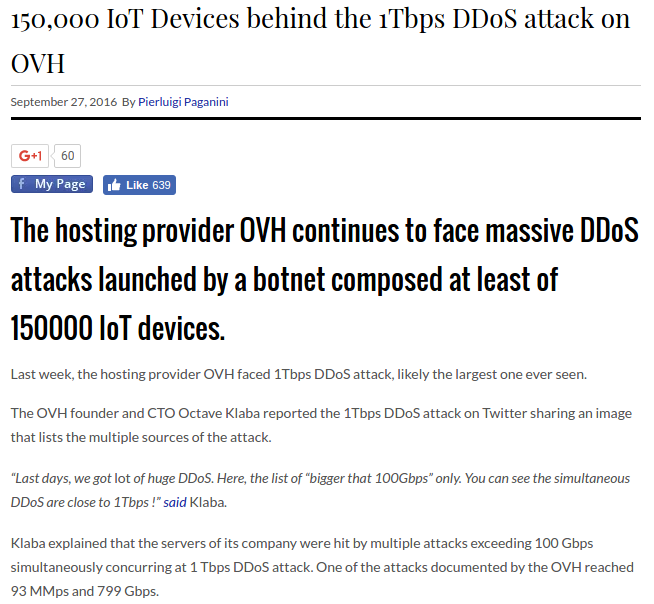